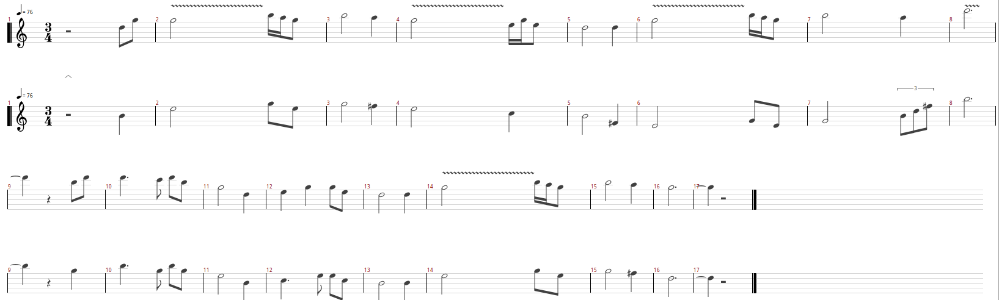
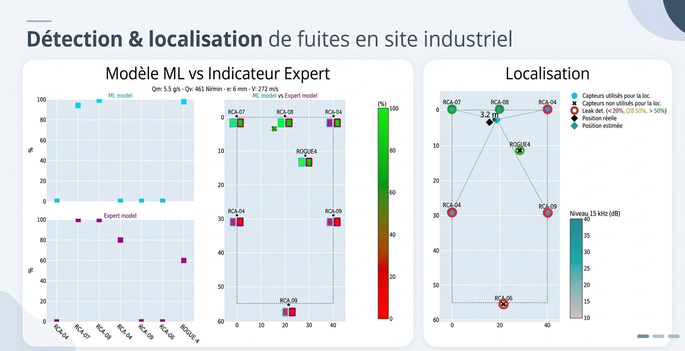
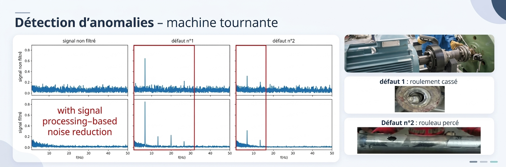
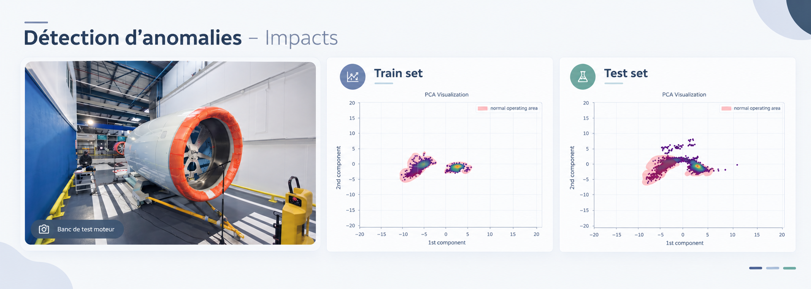
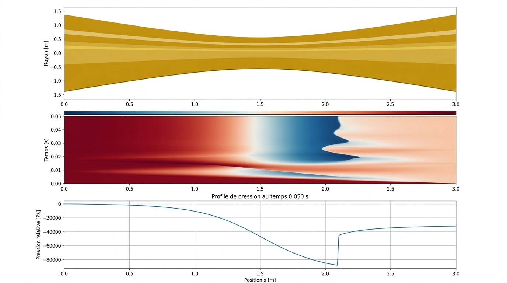
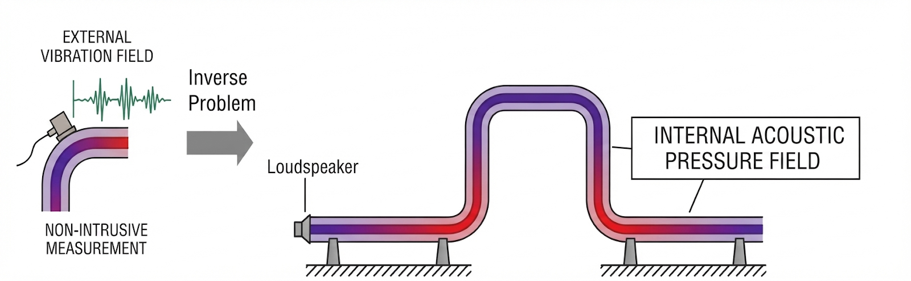
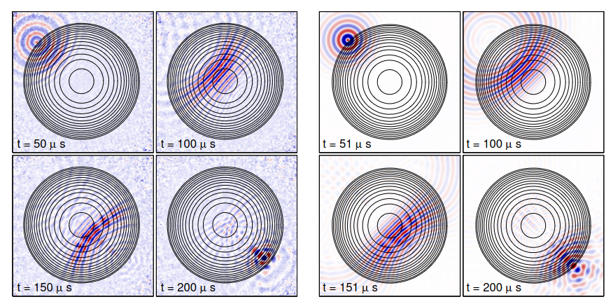

ProfilProfile
Docteur en acoustique avec expérience en R&D, modélisation multiphysique et simulation numérique. Expertise en propagation d'ondes, couplages fluide-structure, turbulences, traitement du signal et mesures LASER (PIV). Je développe également des solveurs de synthèse sonore par modèle physique (propagation non linéaire dans les instruments à vent). Mon objectif est de contribuer à des projets d'ingénierie à fort contenu scientifique, du modèle physique à la validation expérimentale.
Ph.D. in acoustics with experience in R&D, multiphysics modeling and numerical simulation. Expertise in wave propagation, fluid-structure coupling, turbulence, signal processing and LASER measurements (PIV). I also develop physical-modeling sound synthesis solvers (nonlinear propagation in wind instruments). My goal is to contribute to engineering projects with strong scientific content, from the physical model to experimental validation.
Approche transverse pour intervenir sur l'ensemble du cycle technique d'un produit, alliant expertise théorique et validation in-situ :
A cross-disciplinary approach to contribute across a product's entire technical cycle, combining theoretical expertise and on-site validation:
CompétencesSkills
Domaines d'expertiseAreas of expertise
Acoustique, vibrations, turbulences, traitement du signal, instrumentation LASER, synthèse sonore par modèle physique (instruments à vent).
Acoustics, vibration, turbulence, signal processing, LASER instrumentation, physical-modeling sound synthesis (wind instruments).
Calcul scientifique & DataScientific computing & Data
Python (NumPy, pandas, Numba, Pydantic), C/C++ (pybind11), SQLite, Matlab, LabVIEW, Excel.
Simulation & CAOSimulation & CAD
Logiciels : COMSOL, AutoCAD 2D-3D, SolidWorks, OnShape.
Modélisation R&D : schémas FDTD, TVD/WENO (Euler quasi-1D, propagation non linéaire).
Software: COMSOL, AutoCAD 2D-3D, SolidWorks, OnShape.
R&D modeling: FDTD, TVD/WENO schemes (quasi-1D Euler, nonlinear propagation).
Langues & RédactionLanguages & Writing
Anglais : très bonne maîtrise écrite et orale
Espagnol : maîtrise écrite convenable.
Rédaction : LaTeX, Word, PowerPoint.
English: full professional proficiency (written and spoken)
Spanish: limited working proficiency (written).
Writing: LaTeX, Word, PowerPoint.
Projet de recherche personnelPersonal research project
Synthèse sonore de cuivres par modèle physiquePhysical-modeling sound synthesis of brass instruments
ReedLab synthétise le son des instruments à vent directement à partir de partitions Guitar Pro. L'objectif : offrir une alternative à la génération MIDI des cuivres, souvent encore très limitée en réalisme, en produisant un son issu de la physique même de l'instrument.
ReedLab synthesizes the sound of wind instruments directly from Guitar Pro scores. The goal: to offer an alternative to MIDI generation of brass — still often very limited in realism — by producing sound derived from the instrument's own physics.
Contrairement aux approches de référence fondées sur l'hypothèse faiblement non linéaire (équation de Burgers généralisée), ReedLab résout les équations d'Euler complètes : la non-linéarité n'est pas bridée. Cela ouvre la voie à un instrument virtuel exploitable au-delà du jeu réaliste — un véritable atelier d'exploration et de création sonore.
Unlike reference approaches based on the weakly nonlinear assumption (generalized Burgers equation), ReedLab solves the full Euler equations: nonlinearity is not capped. This opens the way to a virtual instrument usable beyond realistic playing — a genuine workshop for sound exploration and creation.
- Physique (ReedLab) : Euler complet (non-linéarité non bridée, pas d'hypothèse faiblement non linéaire) → brillance « cuivrée » jusqu'aux fortissimi ; pertes viscothermiques en √f, rayonnement de pavillon (Levine–Schwinger), lèvre auto-oscillante, routage des pistons, coulisse de trombone (longueur variable) et sourdine (Harmon).
- Partition → son : conversion Guitar Pro (.gp5), gestes déduits de la partition (attaque, legato/staccato, reprises de souffle, vibrato, souffle de jet).
- Effets avancés : glissando de trombone (coulisse mobile), sourdine Harmon (tubes parallèles), réverbération de pièce ; calibration de perce (modèles temporel et fréquentiel) pour l'accord pavillon / coulisses / lèvres.
- Implémentation : Python + Numba (noyau JIT fusionné), configuration YAML/Pydantic, export WAV.
- Physics (ReedLab): full Euler (uncapped nonlinearity, no weakly-nonlinear assumption) → "brassy" brightness up to fortissimo; √f viscothermal losses, bell radiation (Levine–Schwinger), self-oscillating lip, piston routing, trombone slide (variable length) and mute (Harmon).
- Score → sound: Guitar Pro (.gp5) conversion, gestures inferred from the score (attack, legato/staccato, breath marks, vibrato, jet noise).
- Advanced effects: trombone glissando (moving slide), Harmon mute (parallel tubes), room reverberation; bore calibration (time- and frequency-domain models) for tuning bell / slides / lips.
- Implementation: Python + Numba (fused JIT kernel), YAML/Pydantic configuration, WAV export.
Prolonge mes travaux de thèse (FDTD non linéaire en conduits) et mon stage à l'Université d'Édimbourg sur la propagation non linéaire dans les instruments à vent.
Extends my PhD work (nonlinear FDTD in ducts) and my internship at the University of Edinburgh on nonlinear wave propagation in wind instruments.
ExemplesExamples
Partition source — Amazing Grace (2 voix), Amazing-grace_2-voices.gp5
Source score — Amazing Grace (2 voices), Amazing-grace_2-voices.gp5

⇩ Télécharger la partition (.gp5)⇩ Download the score (.gp5)
Rendu ReedLab — trois nuances de jeuReedLab render — three dynamic levels
Piano
Mezzo forte
Forte
Expériences professionnellesProfessional experience
Ingénieur R&D - Traitement du signal & Data scienceR&D Engineer — Signal Processing & Data Science
Recherche, évaluation et industrialisation de nouveaux cas d'usage de détection d'événements par capteurs acoustiques embarqués, avec intégration de modèles d'IA pour la détection et la classification.
Research, evaluation and industrialization of new use cases for acoustic event detection using embedded sensors, integrating AI models for detection and classification.
Detection & localisation de fuites de gazGas leak detection & localization

Détection d'anomaliesAnomaly detection


Détection & localisation de dronesDrone detection & localization
Enseignant en Acoustique (Sound Design)Acoustics Lecturer (Sound Design)
Conception et animation d'un module de 32 heures d'introduction à l'acoustique pour les étudiants en Sound Design (Studio M). Enseignement axé sur la physique du son, les phénomènes acoustiques, la perception & psychoacoustique, l'acoustique des salles et l'électroacoustique.
Designed and delivered a 32-hour introductory acoustics module for Sound Design students (Studio M). Focused on the physics of sound, acoustic phenomena, perception & psychoacoustics, room acoustics and electroacoustics.
Post-doctorat — TurbulencesPostdoctoral Researcher — Turbulence
Étude d'écoulements turbulents en soufflerie par mesures LASER (PIV), caractérisation tourbillonnaire et confrontation à des modèles CFD.
Study of turbulent flows in a wind tunnel using LASER measurements (PIV), vortex characterization and comparison with CFD models.
LASER-based PIV for Vortex Dynamics & Turbulent Flow Characterization

Ingénieur R&D — Simulation numériqueR&D Engineer — Numerical Simulation
Modélisation numérique et simulation des écoulements pulsatoires de gaz non linéaires dans les tuyauteries industrielles par schémas FDTD.
Numerical modeling and simulation of nonlinear pulsating gas flows in industrial piping systems using FDTD schemes.
Doctorat CIFRE — Acoustique & VibrationsCIFRE Ph.D. — Acoustics & Vibration
Direction : J. Gilbert, F. Gautier, A. Pelat.
Sujet : effets non linéaires acoustiques et couplages fluide-structure dans les guides d'ondes, application à des conduites de compresseurs alternatifs.
Advisors: J. Gilbert, F. Gautier, A. Pelat.
Topic: nonlinear acoustic effects and fluid-structure coupling in waveguides, applied to reciprocating compressor piping.
📄 Consulter le manuscrit de thèse (PDF)📄 View the PhD manuscript (PDF)
Nonlinear FDTD Simulation of Transient Gas Flows in Piping Systems

Inverse Problem: Pressure Field Estimation Based on Non-intrusive Structural Vibration Measurements

Stages de recherche — Acoustique et propagation d'ondesResearch internships — Acoustics & wave propagation
- Mars — Juillet 2015, Université d'Édimbourg : modélisation numérique et analyse expérimentale de la propagation non linéaire d'ondes dans les instruments à vent.
-
Juillet — Août 2014, Institut Langevin (ESPCI ParisTech, Paris) : modélisation numérique et analyse expérimentale de la focalisation d'ondes de surface sur des plaques isotropes (phénomène de lentille acoustique).

- Juin 2013, LAM — UPMC (Paris) : développement d'une méthode non intrusive de caractérisation acoustique d'un conduit vocal, pour l'amélioration de talk-box.
- March — July 2015, University of Edinburgh: numerical modeling and experimental analysis of nonlinear wave propagation in wind instruments.
-
July — August 2014, Institut Langevin (ESPCI ParisTech, Paris): numerical modeling and experimental analysis of surface-wave focusing on isotropic plates (acoustic lens phenomenon).
- June 2013, LAM — UPMC (Paris): development of a non-intrusive method for acoustic characterization of a vocal tract, to improve talk-box devices.
FormationEducation
Traitement du signal, mécanique des fluides / aéro-acoustique, vibro-acoustique, opto-acoustique, acoustique non linéaire, acoustique en fluide réel.
Signal processing, fluid mechanics / aeroacoustics, vibroacoustics, opto-acoustics, nonlinear acoustics, acoustics in real fluids.
Publications et conférences internationalesPublications & international conferences
- ConférenceConference 2023 — ISPIV 2023, San Diego (1er auteur)2023 — ISPIV 2023, San Diego (first author) Vortex interactions between two cylinders in a turbulent boundary layer Lire l'article →Read the paper →
- ConférenceConference 2023 — Forum Acusticum (1er auteur)2023 — Forum Acusticum (first author) Nonlinear acoustic modeling in waveguides: from brass instruments to industrial applications
- ConférenceConference 2022 — 23rd Australasian Fluid Mechanics Conference (co-auteur)2022 — 23rd Australasian Fluid Mechanics Conference (co-author) Turbulent Kinetic Energy Budget and Dynamics of Composed Wakes in TBL
- Journal (MSSP) 2020 — Mechanical Systems and Signal Processing (1er auteur)2020 — Mechanical Systems and Signal Processing (first author) Inverse identification of the acoustic pressure inside a U-shaped pipeline based on acceleration measurements
- ConférenceConference 2019 — INTERNOISE, Madrid (1er auteur)2019 — INTERNOISE, Madrid (first author) Estimation of the sound pressure in a bent pipe from non intrusive acceleration measurements by an inverse problem procedure Lire l'article →Read the paper →
- ConférenceConference 2018 — INTERNOISE, Chicago (1er auteur)2018 — INTERNOISE, Chicago (first author) Low and High Level Acoustic Propagation in Waveguides: Vibroacoustic Coupling in a Bent Pipe at Low Frequency Lire l'article →Read the paper →
- Journal (APL) 2014 — Applied Physics Letters (3e auteur)2014 — Applied Physics Letters (third author) Experiments on Maxwell's Fish-eye dynamics in elastic plates
Certifications et centres d'intérêtCertifications & interests
Certifications : Sécurité LASER (CERLA), Formation H0B0, Permis B, BAFA.
Certifications: LASER safety (CERLA), H0B0 electrical training, Driving licence (B), BAFA (youth activity leader).
Centres d'intérêt : Musique, basketball, escalade.
Interests: Music, basketball, climbing.